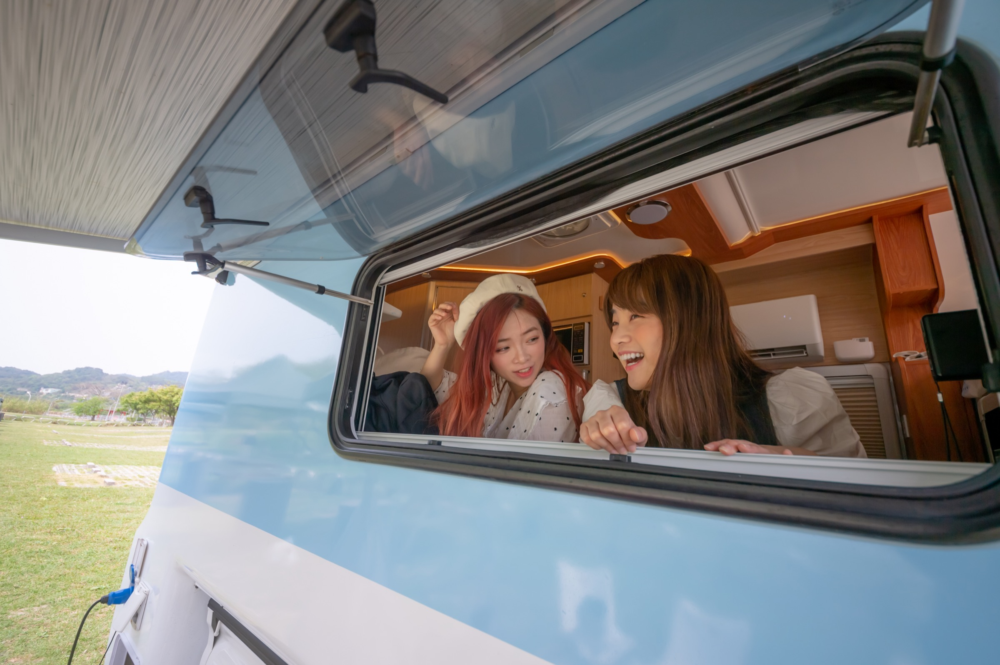

第一次租露營車要注意什麼
車高 3 公尺、電力、水箱與戶外使用提醒，給露營車新手的一次整理。
給正在猶豫「露營車出租到底怎麼玩」的你：從新手注意事項到三天兩夜行程，讓出發更安心。
版型已預留縮圖與「閱讀更多」，後續可逐篇建立文章頁

車高 3 公尺、電力、水箱與戶外使用提醒，給露營車新手的一次整理。
適合停放的場域與不建議情境，讓三天兩夜體驗更順、不掃興。
最低租期為三天兩夜：海邊慢遊、營區放鬆、漁港買海鮮，留白更好玩。
交車前準備、到營區後的步驟，以及補水補電的常見小細節。
兩張雙人床＋獨立衛浴，親子出遊更舒服：睡眠、洗澡與收納一次到位。
海邊慢遊的節奏、食材採買與夜晚舒適度關鍵：冷暖空調與獨立浴室很加分。
帳篷 vs 露營車：想要戶外氛圍、又想要舒適與便利？你可以兩個都要。
更舒服的節奏：每日行駛建議不超過 200 公里，留時間給風景與休息。